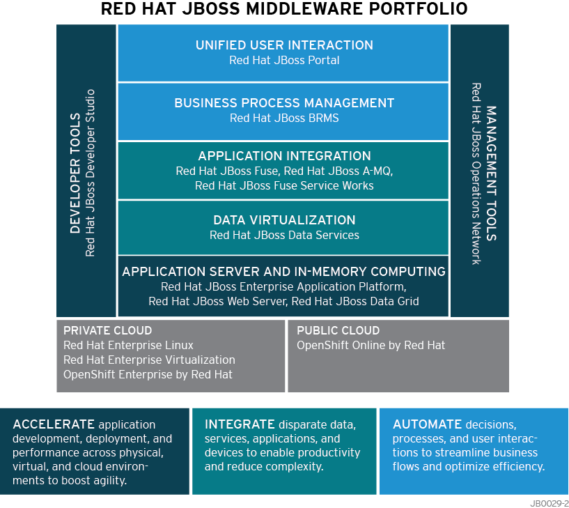

JBoss
與過去相較，現今企業IT必須更靈活，並回應不斷變化的業務需求。而能滿足這些需求的應用程式與服務，以及這些應用與服務的使用方式，都跟過去有顯著的不同。它們必須能夠調整，能更有效率地整合新舊應用程式。這些應用和服務的開發速度必須更快，可在包含實體、虛擬、行動及雲端資源的異質環境中無縫擴充。遺憾的是，過去所使用的中介軟體基礎架構，缺乏能滿足這些新要求的靈活性、生產力或成本效益，使企業面臨失去競爭優勢的風險。
Red Hat JBoss中介軟體所提供的工具，能快速建構將人員、流程和資訊連結在一起的系統，進而協助組織發展其中介軟體基礎架構。這些連結且靈活的應用程式，讓使用者能以嶄新、高效率的方式促進企業成功，包括增加營收、降低成本、保留更多客戶，並改善與供應商的合作關係。 Red Hat JBoss中介軟體將高成本、不易管理的應用程式基礎架構，轉變為跨多個環境、真正動態的基礎架構。這正是全球成千上萬的客戶-幾乎包含所有產業及各種規模的企業信任Red Hat JBoss中介軟體的原因。
加速應用程式開發、部署與效能
不同於過去的「一體適用」模式，客制化應用程式和解決方案，讓企業能以獨特的方式創造差異化優勢，並為客戶提供價值，能加速應用程式開發、部署和效能的企業，其競爭優勢明顯超過基礎架構僵化無彈性的企業。 Red Hat JBoss 企業應用平台(EAP) 是現代化、動態JAVA應用程式的領先開源平台，也是Red Hat JBoss中介軟體的基礎。它能靈活部署在實體、虛擬和雲端環境中。JBoss EAP支援許多以JVM為基礎的架構，包括Spring、Struts和Google Web Toolkit。 增添Red Hat JBoss Developer Studio可進一步提高生產力。這套整合式開發環境(IDE)提供完備的功能，可讓開發人員開發、測試、部署豐富的Web應用、企業應用和SOA服務。
整合Red Hat的記憶體資料網格解決方案-Red Hat JBoss Data Grid，企業可讓應用程式快速、可靠的存取常用資料，進而彈性擴充應用程式。JBoss Data Grid支援各種應用程式，包括Java、.NET、C#和Python，能夠提供資料快取、資料複製和分散式運算服務。它能減輕超載的資料來源，以簡化管理並提升查詢、交易和事件的效能。
JBoss Operations Network (JBoss ON) 提供監控、配置、效能調整和進階管理功能，可提升整個Red Hat JBoss中介軟體環境的營運效率。
整合應用程式、資料和設備
企業在提供新型IT方案以滿足業務需求的同時，還必須將現有資源的價值最大化。應用程式、資料和設備的整合，對提供靈活有效的IT解決方案至關重要。明確的業務要求，能促進整合的成功。對許多企業來說，傳統解決方案已經證明過於昂貴且複雜，難以實現完全整合的目標。而服務導向架構則提供了靈活的模組化捷徑。有了Red Hat JBoss Fuse與Red Hat JBoss A-MQ，您可以輕鬆整合各種應用程式、資料或設備。即使您的業務涵蓋低技術水準的分支機構、穿梭在沒有無線服務的區域的貨車、嵌入式設備、或自行擁有技術方案的合作夥伴，JBoss Fuse和JBoss A-MQ都能讓您整合基礎架構，超越資料中心之外並且完全涵蓋每個業務層面。Red Hat JBoss Fuse Service Works提供靈活、符合標準的解決方案，能整合需求複雜的業務服務和事件，如流程編排、服務註冊和業務事件導向架構(EDA)。這些產品可提供開源的靈活性及創新性，以及企業級軟體的穩定性、穩健性和安全性。